Claude Code y Codex, trabajando en tu MacClaude Code and Codex, at work on your Mac
La mesa tranquilaThe quiet desk
Un día entero dirigiendo agentes, del primer café al aterrizaje de medianoche. Lo que haces en la ventana de jmux, lo que ves en ella, y lo que jmux decide no hacer.A full day of running agents, from the first coffee to the midnight landing. What you do in the jmux window, what you see there, and what jmux chooses not to do.
Las figuras del Mac son capturas de la ventana real sobre proyectos de demostración, con agentes de verdad trabajando en ellos, recortadas a veces a lo que cuentan, y alguna con un trozo tapado o quitado. Las del teléfono son su app real contra el Mac simulado que trae el repositorio.The Mac figures are captures of the real window on demo projects, with real agents working in them, sometimes cut down to what they tell, and a few with a passage blanked or taken out. The phone figures are its real app against the simulated Mac the repository ships.
07:40
Todo sigue ahíEverything is still there
Anoche cerraste la ventana con tres proyectos abiertos y un agente a medias. Esta mañana sigue a medias, en el mismo sitio.Last night you closed the window with three projects open and an agent halfway through. This morning it is still halfway through, in the same place.
La ventana de jmux es lo único que cierras. Las terminales viven en otro proceso, jmuxd, que no depende de ella: sales con ⌘Q, vuelves a abrir, y cada pestaña conserva su historial y su programa en marcha. El servidor de desarrollo ni se ha enterado.
The jmux window is the only thing you close. The terminals live in another process, jmuxd, which does not depend on it: you quit with ⌘Q, open it again, and every tab still has its scrollback and its program running. The dev server never noticed.
Si lo que se reinició fue el Mac, vuelve la disposición entera, con sus proyectos, pestañas y divisiones, y cada conversación de agente se retoma con la orden de su propio agente: claude --resume o codex resume. Un reinicio sí se lleva los procesos; las conversaciones no. Y actualizar jmux no cuesta ninguno: el demonio nuevo recoge las terminales vivas del viejo, y si el traspaso falla, el viejo sigue sirviendo.
If what restarted was the Mac, the whole layout comes back, with its projects, tabs and splits, and every agent conversation resumes with its own agent's command: claude --resume or codex resume. A reboot does take the processes; it does not take the conversations. Updating jmux costs none of them: the new daemon takes the live terminals over from the old one, and if the handover fails, the old one keeps serving.
La barra lateral es el mapa del trabajo. Cada proyecto con sus sesiones debajo, y cada agente dice en qué está: trabajando, parado porque necesita algo de ti, o con algo nuevo que aún no has visto. Al pie, tres contadores para esas tres cosas. Los hijos de un agente cuelgan de él, y una fila plegada lleva el estado más urgente de lo que esconde.
The sidebar is the map of the work. Each project with its sessions under it, and each agent says where it stands: working, stopped because it needs something from you, or holding something new you have not seen. At the foot, three counters for those three things. An agent's children hang under it, and a folded row wears the most urgent state of what it hides.
1234567
Una mañana en payments-api. 1El líder, con el color de su perfil. 2Su constructor, que acaba de terminar, y 3su revisor, que lee. Cada fila dice cuánto contexto lleva. 4El informe del constructor, en la conversación del líder, que lo repasa antes de pedir la revisión. 5En el tablero, las dos entradas en curso llevan el nombre del líder. 6Al pie, los tres contadores: uno trabajando, nadie parado, dos cosas sin ver. 7El servidor de desarrollo, que sigue sirviendo.A morning in payments-api. 1The lead, in its profile's colour. 2Its builder, just finished, and 3its reviewer, reading. Each row says how much context it has used. 4The builder's report, in the lead's conversation, which goes over it before asking for the review. 5On the board, the two entries in progress carry the lead's name. 6At the foot, the three counters: one working, none blocked, two things unseen. 7The dev server, still serving.
08:55
El backlog es el planThe backlog is the plan
Lo que hay que hacer ya está escrito, en tu repositorio y en Markdown. jmux lo pone en un tablero y te deja empezar desde ahí.What needs doing is already written down, in your repository, in Markdown. jmux lays it out on a board and lets you start from there.
Cada proyecto puede llevar su registro en .gg/: el backlog con lo pedido y aún no hecho, el diseño tal como es hoy, el glosario y el runbook. Son ficheros de texto que versiona git y que cualquier agente lee, con jmux o sin él. jmux no los guarda: los muestra y escribe en ellos con cuidado. Los números de las entradas los reparte el demonio, para que dos agentes que apuntan cosas a la vez, cada uno en su rama, no choquen.
Every project can keep its record in .gg/: the backlog of what was asked and is not done yet, the design as it stands today, the glossary and the runbook. They are text files git keeps and any agent reads, with jmux or without it. jmux does not keep them: it shows them and writes to them with care. The daemon hands out the entries' numbers, so two agents writing things down at once, each on its own branch, never collide.
El tablero ordena las entradas por lo que está pasando, no por su tipo. In Progress, con quién trabaja en cada una. Next, tu lista corta, en tu orden. Everything Else, lo demás. Desde una entrada, Work on… abre una tarjeta pequeña: lo que has elegido, un perfil y una línea que dice qué va a abrir Start. Con Solo, una sesión de Claude o de Codex. Con Team, un líder con el que hablas.
The board sorts entries by what is happening, not by kind. In Progress, with who is on each one. Next, your short list, in your order. Everything Else, the rest. From an entry, Work on… opens a small card: what you picked, a profile and one line saying what Start will open. With Solo, one Claude or Codex session. With Team, a lead you talk to.
Al pulsar Start, la entrada queda atada a la sesión, y el tablero lo muestra. En la figura 2 el líder de Team ha leído el código antes de proponer nada, ha visto que los tests ni siquiera se ejecutaban, y propone partir el trabajo en dos piezas, una detrás de otra. No empieza hasta que le dices que sí.
Press Start: the entry is tied to the session, and the board shows it. In figure 2 the Team lead has read the code before proposing anything, seen that the tests were not even running, and proposes splitting the work into two parts, one after the other. It does not start until you say yes.
12345
1El líder, parado porque espera algo de ti. 2Su pregunta: empezar con esta partición o cambiar el plan. 3El tablero de .gg/BACKLOG.md, con su vista de documento al lado. 4Dos entradas en curso, con el nombre de quien trabaja en ellas. 5Next, tu lista corta, y Work on These… para empezarla.1The lead, stopped because it waits on you. 2Its question: start with this split, or change the plan. 3The board of .gg/BACKLOG.md, its document view beside it. 4Two entries in progress, with the name of who works on them. 5Next, your short list, and Work on These… to start it.
09:20
Repartir el trabajoHanding out the work
Hablas con un agente. Él habla con los demás. Ninguno puede más que tú.You talk to one agent. It talks to the rest. None of them can do more than you.
Un perfil es una forma de trabajar: quién dirige y por qué pasos va el trabajo. jmux trae cuatro. Solo es un agente sin nada alrededor. Checked, un agente que pide revisiones y decide qué arreglar. Team y Thorough te dan un líder con el que hablas, que parte el trabajo en piezas y lleva cada una por su camino. Los cambias, o haces los tuyos, en Settings ▸ Profiles, y un líder se queda con una copia del suyo que puedes tocar sin tocar el perfil.
A profile is a way of working: who leads, and the steps the work goes through. jmux ships four. Solo is one agent with nothing around it. Checked is one agent that asks for reviews and decides what to fix. Team and Thorough give you a lead you talk to, which splits the work into parts and takes each one through its steps. You change them, or make your own, in Settings ▸ Profiles, and a lead keeps a copy of its own you can edit without touching the profile.
El líder pide cada hijo y jmux lo arranca. Un constructor puede tener su propio worktree de git, en una rama suya, o trabajar en la copia del líder. Dos hijos nunca escriben a la vez en la misma copia, y el líder nunca se queda esperando a que una quede libre. Un revisor solo puede leer. En la barra lateral cuelgan del líder, con un martillo el que construye y un ojo el que lee. Cuando un hijo termina, su informe llega a la conversación del líder como un mensaje, y ahí lo lees tú también.
The lead asks for each child and jmux starts it. A builder can get its own git worktree, on a branch of its own, or work in the lead's checkout. Two children never write in one checkout at once, and the lead never waits for one to come free. A reviewer can only read. In the sidebar they hang under the lead, a hammer for the one that builds, an eye for the one that reads. When a child finishes, its report reaches the lead's conversation as a message, and you read it there too.
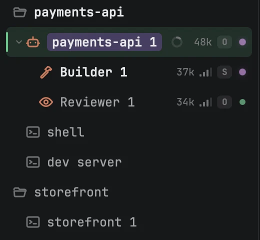
El martillo construye, el ojo lee. Los dos cuelgan de quien los pidió.The hammer builds, the eye reads. Both hang under whoever asked for them.
Nunca más que su padre.Never more than its parent.
Un hijo arranca con el permiso de quien lo pidió y nunca con uno mayor; si el permiso del padre no se conoce, el hijo no arranca. Un revisor es de solo lectura, tenga el permiso que tenga su padre. Y si quieres ver a cada hijo antes de que exista, enciende en la bandeja de la barra de título Confirm Child Sessions Before They Start: cada uno te enseña su agente, su modelo, dónde va a trabajar, su rama y su permiso, y espera a que pulses Start Session.
A child starts with the permission of whoever asked for it, never a larger one; if the parent's permission is unknown, the child does not start. A reviewer reads only, whatever its parent may do. And if you want to see each child before it exists, turn on Confirm Child Sessions Before They Start in the title bar's tray: each one shows you its agent, its model, where it will work, its branch and its permission, and waits for Start Session.
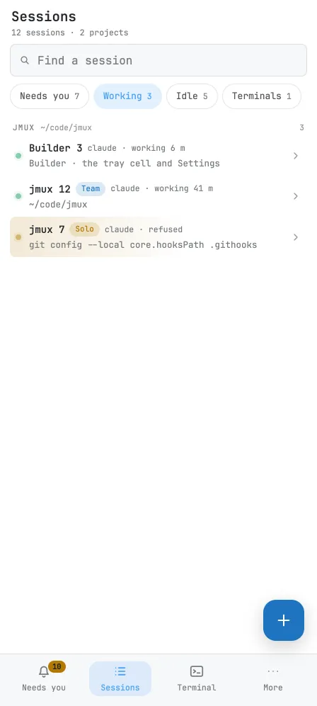
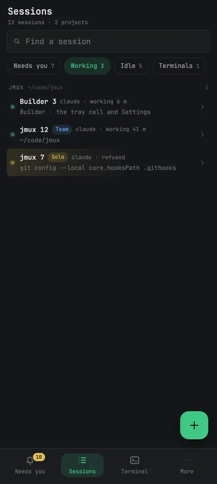
Lo mismo, en el bolsillo. A la izquierda, un líder pide arrancar un hijo y espera tu aprobación, con sus hijos agrupados por pieza debajo. A la derecha, quién está trabajando ahora mismo, con su perfil y desde cuándo.The same, in your pocket. On the left, a lead asks to start a child and waits for your approval, its children grouped by part below. On the right, who is working right now, with its profile and for how long.
11:15
Las reglas, a la vistaThe rules, in plain sight
Qué puede hacer un agente sin preguntarte, escrito en tarjetas que se leen como frases.What an agent may do without asking you, written on cards that read as sentences.
En Settings ▸ Rules hay tres franjas: antes de un commit, el commit, y cuando aterriza. En ellas, cinco tarjetas, y cada una dice su regla en una frase que podrías decirle a un compañero: hace commit solo en cada cambio coherente; solo hace push a través del despliegue, y un git push suelto te pregunta. Debajo, una sexta línea: en qué idioma te contestan las sesiones. Las de This Mac valen en todos los proyectos. Un proyecto puede añadir las suyas y hacerlas más estrictas, nunca más laxas.
Settings ▸ Rules has three bands: before a commit, the commit, and once it lands. On them, five cards, and each one says its rule in a sentence you could say to a colleague: commits on its own at each coherent change; pushes only through the deploy, and a loose git push asks you. Below them, a sixth line: the language sessions answer you in. The ones under This Mac hold in every project. A project can add its own and make them stricter, never looser.
Antes de un commitBefore a commit
Checks
make quick · A commit needs this passed.
El commitThe commit
Commit
Commits on its own at each coherent change.
Push ⛉
Pushes only through the deploy; a loose git push asks you.
Cuando aterrizaOnce it lands
Landing
After a commit lands on the main branch, runs make install. On any other branch, runs make install RELEASE=0.
Site
When a change that shows on the site lands, publishes it with scripts/publish-site.sh.
A branch lands only after make check passes on it.
Las cinco tarjetas del propio repositorio de jmux, compuestas aquí a mano: no es una captura. Las frases en inglés son las que jmux escribe en ellas, palabra por palabra. El escudo marca una barrera.The five cards of jmux's own repository, typeset here by hand: this is not a capture. The sentences are the ones jmux writes on them, word for word. The shield marks a guardrail.
Una tarjeta con escudo es una barrera: Claude se detiene de verdad ante esa orden, y te pregunta o se niega si la regla dice never. Sin escudo, la regla se le dice al agente al empezar. A Codex, por ahora, todas se le dicen. Lo que guardas vale para las sesiones que empiecen después; las abiertas siguen con las reglas con las que nacieron, y la pantalla te lo recuerda al guardar.
A card with a shield is a guardrail: Claude really stops at that command, and asks you or refuses where the rule says never. Without one, the rule is told to the agent when it starts. Codex, for now, is told all of them. What you save holds for sessions that start afterwards; the open ones keep the rules they were born with, and the screen reminds you when you save.
Debajo del lienzo está lo que tú le dejas a tu líder: Your lead, on its own. Hacer commit, aterrizar e instalar, publicar el sitio. Al encender uno, jmux te enseña antes qué da exactamente, por ejemplo aterrizar una rama en main solo cuando ha pasado su comprobación completa, y no cambia nada hasta que confirmas.
Under the canvas is what you leave to your lead: Your lead, on its own. Committing, landing and installing, publishing the site. When you turn one on, jmux first shows what exactly it gives, such as landing a branch on main only once its full check has passed, and changes nothing until you confirm.
Y cuando el control de seguridad del modo auto de Claude para un paso de tu líder, aparece una tarjeta junto a su fila sin quitarte el teclado: por qué lo paró Claude, el paso exacto, y tres botones, No, Once y Allow for this project. El último no tiene atajo, a propósito. Si no contestas en veinte segundos, el líder aparca ese paso y sigue con otra cosa, y tu respuesta le llega después.
And when Claude's auto-mode safety check stops one of your lead's steps, a card appears beside its row without taking your keyboard: why Claude stopped it, the exact step, and three buttons, No, Once and Allow for this project. The last has no shortcut, on purpose. If you do not answer within twenty seconds, the lead parks that step and gets on with something else, and your answer reaches it later.
13:30
Uno escribe, otro leeOne writes, another reads
Lo que construyó un modelo lo revisa otro. Las conclusiones las saca el líder, y por escrito.What one model built, another reviews. The lead draws the conclusions, in writing.
En el perfil decides cómo se revisa: cada pieza y el conjunto, cuántas rondas, cuántos lectores por ronda, y con qué listón se arregla lo que encuentran, desde Only what breaks hasta Everything worth fixing. En Team, Opus lee lo que construyó Sonnet. En Thorough lee primero Codex, después de los arreglos lee Opus, y el conjunto lo leen los dos a la vez.
In the profile you decide how review goes: each part and the whole, how many rounds, how many readers per round, and how high the bar is for fixing what they find, from Only what breaks to Everything worth fixing. In Team, Opus reads what Sonnet built. In Thorough, Codex reads first, Opus reads after the fixes, and both read the whole together.
Un revisor es un hijo que solo puede leer, y el demonio rechaza cualquier cosa suya que no sea leer. Recibe el diff y la lista de ficheros. Si el proyecto tiene una prueba propia (un try, que monta el cambio aparte y deja escrito lo que vio), recibe también su carpeta, para juzgar lo que vería una persona y no solo el código.
A reviewer is a child that can only read, and the daemon refuses anything from it that is not reading. It gets the diff and the list of files. If the project has a try of its own (which builds the change apart and writes down what it saw), it gets that folder too, to judge what a person would see and not only the code.
El informe llega entero a la conversación del líder. El líder decide cada hallazgo, arreglar ahora, más tarde o no, y escribe por qué. Esta vez, lo que dejó para más tarde lo apuntó el propio líder en el backlog. Tú lees esas decisiones donde las escribe y, si el perfil lo pide, nada aterriza sin que digas que sí.
The report reaches the lead's conversation whole. The lead rules on each finding, fix now, later or no, and writes why. This time the lead wrote what it left for later into the backlog itself. You read those rulings where it writes them and, if the profile asks for it, nothing lands until you say yes.
La revisión del cambio entero, en dos trozos de la conversación del líder. Arriba, el final del informe del revisor: lo que leyó y lo que no pudo probar. Abajo, unas líneas más allá, el líder decide cada hallazgo: arreglar, arreglar, no.The review of the whole change, in two pieces of the lead's conversation. Above, the end of the reviewer's report: what it read and what it could not try. Below, a few lines further on, the lead rules on each finding: fix, fix, no.
16:10
VeteWalk away
El trabajo sigue cuando te levantas. Solo te buscará en el teléfono lo que te necesite.The work goes on when you get up. Whatever needs you will find you on your phone, and nothing else will.
Clic derecho en Phone, en la bandeja de la barra de título, y Pair a Phone…: un código QR de un solo uso. Lo escaneas con Tailscale conectado en el teléfono, te emparejas con la huella y añades jmux a la pantalla de inicio. Desde entonces el Mac sirve la app del teléfono por tu red de Tailscale y solo por ella, y el teléfono demuestra quién es con una passkey en cada conexión. Tus terminales y tus conversaciones no pasan por el servidor de nadie; los avisos viajan cifrados por el servicio push del navegador.
Right-click Phone in the title bar's tray, then Pair a Phone…: a single-use QR code. You scan it with Tailscale connected on the phone, pair with your fingerprint and add jmux to the home screen. From then on the Mac serves the phone's app over your Tailscale network and nothing else, and the phone proves who it is with a passkey on every connection. Your terminals and conversations go through nobody's server; notifications travel encrypted through the browser's push service.
Needs you es la primera pestaña. Un Claude que pide permiso para ejecutar algo aparece como una tarjeta con la orden y la carpeta: Allow, Deny o Deny and say why…. Mientras Phone está encendido y hay un teléfono emparejado, esa misma tarjeta sale también en el Mac, junto a la fila. La contestas donde estés, y si no la contesta nadie, la pregunta vuelve a la terminal sin que se haya decidido nada.
Needs you is the first tab. A Claude asking permission to run something shows up as a card with the command and its folder: Allow, Deny or Deny and say why…. While Phone is on and a phone is paired, the same card shows on the Mac too, beside the row. You answer it wherever you are, and if nobody answers, the question goes back to the terminal with nothing decided.
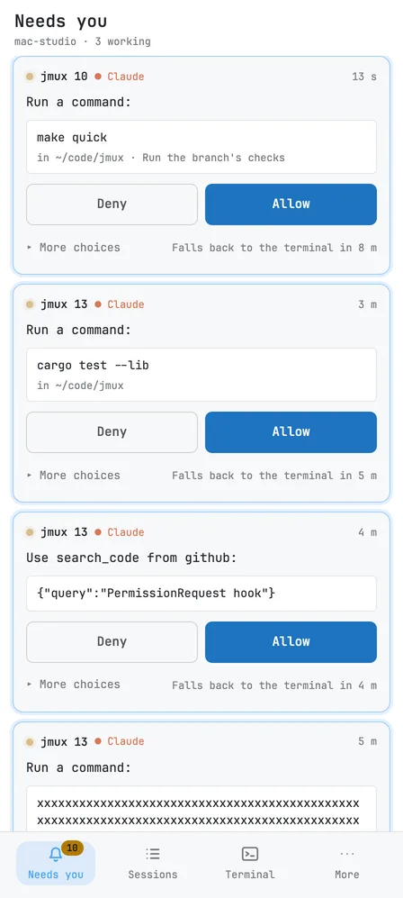
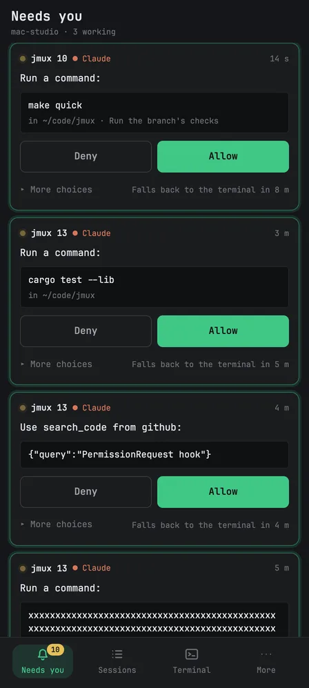
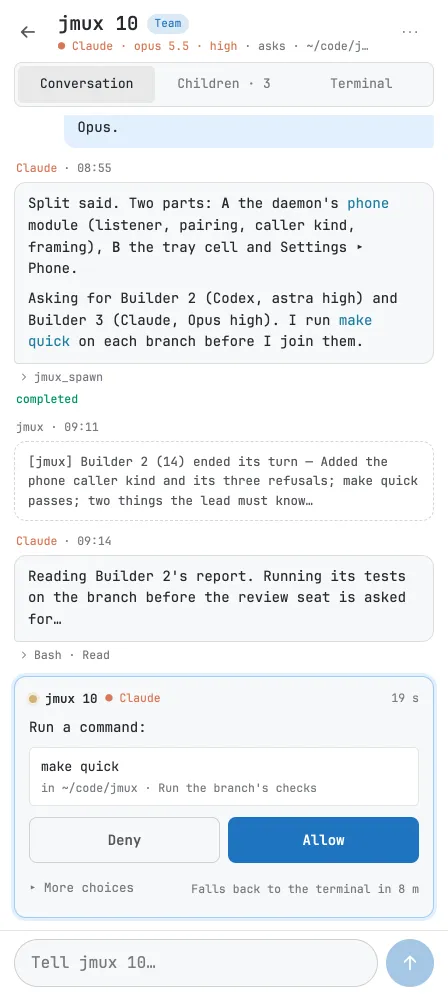
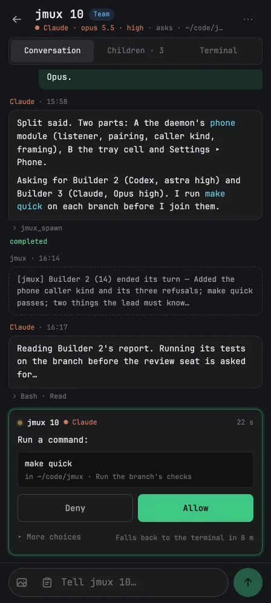
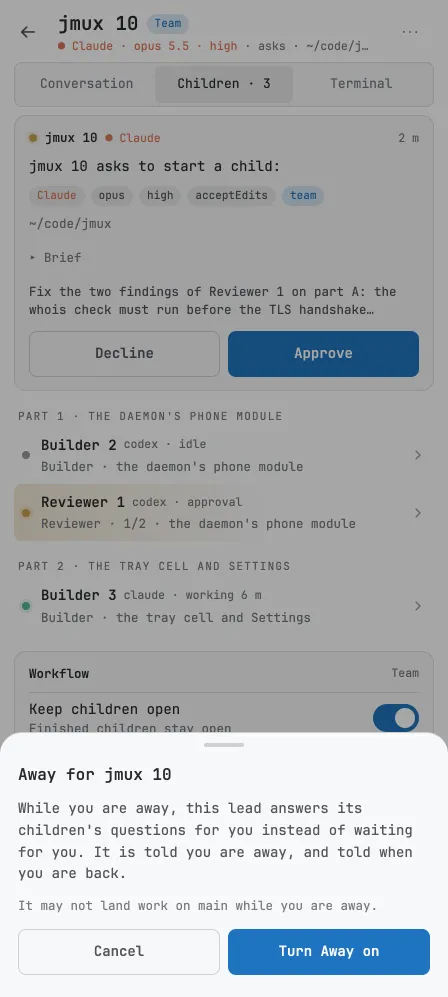
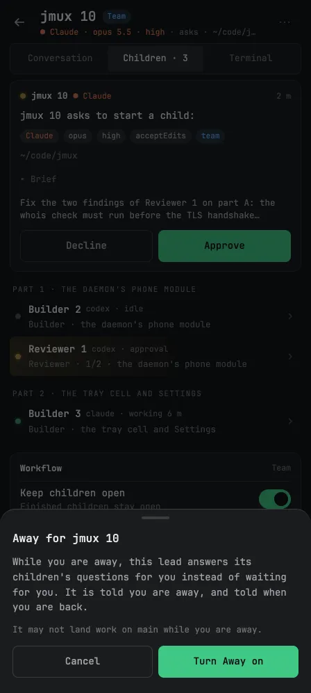
Tres pantallas del teléfono. Lo que te necesita, con Allow a mano. La conversación de un líder, con su pregunta dentro y el compositor para contestarle. Y la hoja de Away, que dice qué hará el líder mientras no estás antes de encenderlo.Three phone screens. What needs you, with Allow to hand. A lead's conversation, with its question inside and the composer to answer it. And the Away sheet, which says what the lead will do while you are gone before you turn it on.
Con el + de Sessions empiezas una sesión en cualquier proyecto: Claude o Codex, el perfil con el que trabajará (viene elegido el de ese proyecto) y su primer mensaje. Abres una sesión y lees su conversación, ves a sus hijos o miras su terminal en vivo. Le escribes al líder desde abajo, Tell payments-api 1…, y le llega como un mensaje tuyo. Si lo que quieres enseñarle es una pizarra o un error en otra pantalla, le mandas la foto, y el agente la recibe en el Mac.
With + on Sessions you start a session in any project: Claude or Codex, the profile it works under (that project's own comes chosen) and its first message. You open a session and read its conversation, see its children or watch its terminal live. You write to the lead from the bottom, Tell payments-api 1…, and it gets it as a message from you. If what you want to show it is a whiteboard or an error on another screen, you send the photo, and the agent gets it on the Mac.
Away es para cuando te vas de verdad. Lo enciendes en la fila del líder, en Edit Workflow… o desde el teléfono, y aparece una luna en la fila. Mientras dura, el líder decide solo y escribe por qué, y contesta las peticiones de permiso de sus hijos de Claude dentro de los límites que pone jmux: leer y comprobar, sí; hacer push, desplegar o escribir fuera de la carpeta del hijo, no. Tus barreras te siguen preguntando a ti. No aterriza nada en main salvo que se lo permitas con May Land on Main. Cuando vuelves y escribes en su terminal, Away se acaba.
Away is for when you really leave. You turn it on from the lead's row, from Edit Workflow… or from the phone, and a moon appears on the row. While it lasts, the lead decides alone and writes why, and answers its Claude children's permission prompts within limits jmux sets: reading and checking, yes; pushing, deploying or writing outside the child's folder, no. Your guardrails still ask you. Nothing lands on main unless you allow it with May Land on Main. When you come back and type in its terminal, Away ends.
El sol de la bandeja mantiene el Mac despierto mientras trabajan los agentes, y deja de hacerlo cuando paran. Con la tapa cerrada, el Mac se duerme igual.
The sun in the tray keeps the Mac awake while the agents work, and lets go when they stop. With the lid closed, the Mac sleeps all the same.
18:40
Se acaba el contextoThe context runs out
Un líder no dura para siempre. Su relevo sabe dónde lo dejó.A lead does not last for ever. Its successor knows where it left off.
Cuando el líder llega al umbral de su perfil (el 35 % del contexto, en Team), jmux le pide una nota de traspaso: qué hay hecho, qué viene ahora, qué peligros hay. Con esa nota arranca un sucesor con el mismo modelo, el mismo permiso, el mismo perfil y la misma copia de trabajo, que adopta a sus hijos y empieza leyéndola. Los mensajes para el viejo le llegan al nuevo. La última línea del viejo dice a quién pasó el trabajo.
When the lead reaches its profile's threshold (35 % of the context, in Team), jmux asks it for a handover note: what is done, what comes next, what the dangers are. With that note it starts a successor on the same model, the same permission, the same profile and the same checkout, which adopts its children and starts by reading it. Messages for the old one reach the new one. The old one's last line says who it handed the work to.
Es una pulsación, y no aparece nada.It is one press, and nothing pops up.
También puedes hacerlo tú. Relay ▸, en el clic derecho del líder, te dice cuánto contexto lleva, te deja cambiar de perfil, de modelo o de esfuerzo para el relevo, y hacerlo ahora, en cuanto se pueda o más tarde. Later lo aparca: la sesión queda atenuada con un marcador, y en el menú + del proyecto, Parked ▸, lees su nota, le cambias el modelo y lo arrancas mañana.
You can do it yourself too. Relay ▸, on the lead's right-click, tells you how much context it has used, lets you change the profile, model or effort for the successor, and relay now, as soon as possible or later. Later parks it: the session dims with a bookmark, and in the project's + menu, Parked ▸, you read its note, change its model and start it tomorrow.
1234
56
Un relevo pedido a mano, arriba y abajo de la ventana. 1El líder viejo, atenuado, con 90 000 tokens de contexto, y 2su sucesor, que empieza con 39 000. 3El viejo dice dónde dejó su nota. 4El final del primer mensaje del nuevo: después de la nota del viejo, el flujo de trabajo que sigue, que manda si los dos no coinciden. 5La última línea del viejo. 6El nuevo, tras leerlo todo, dice que toma el relevo y por dónde sigue, paso a paso, y no empieza hasta que digas que sí.A relay asked for by hand, the top and the bottom of the window. 1The old lead, dimmed, at 90,000 tokens of context, and 2its successor, starting at 39,000. 3The old one says where it left its note. 4The end of the new one's first message: after the old one's note, the workflow it follows, which wins where the two disagree. 5The old one's last line. 6The new one, having read it all, says it is taking over and where it goes from here, step by step, and does not start until you say yes.
21:30
Lo del martesThat thing from Tuesday
Sabes que un agente te lo explicó. No sabes cuál, ni en qué proyecto.You know an agent explained it to you. You do not know which one, or in what project.
⌘⇧F busca en todas las conversaciones de Claude y de Codex de este Mac: las empezadas en jmux y las que no, las vivas y las terminadas. Words busca palabras; Text, el texto exacto. Los resultados vienen agrupados por conversación, con cada mensaje que coincide, y a la derecha la conversación para leerla sin salir del panel.
⌘⇧F searches every Claude and Codex conversation on this Mac: the ones started in jmux and the ones that were not, the live ones and the ended ones. Words looks for words; Text, for the exact text. Results come grouped by conversation, with every message that matches, and the conversation on the right to read without leaving the panel.
Si la conversación sigue viva, ⌘⏎ te lleva a su sesión. Si terminó hace días, ⇧⌘⏎ la retoma aquí, en una sesión nueva, con su agente. Los agentes también buscan, y en Settings ▸ Search decides si solo en su proyecto o en todas partes, y qué carpetas quedan fuera de la búsqueda.
If the conversation is still alive, ⌘⏎ takes you to its session. If it ended days ago, ⇧⌘⏎ resumes it here, in a new session, with its agent. Agents search too, and in Settings ▸ Search you decide whether only in their project or everywhere, and which folders stay out of search.
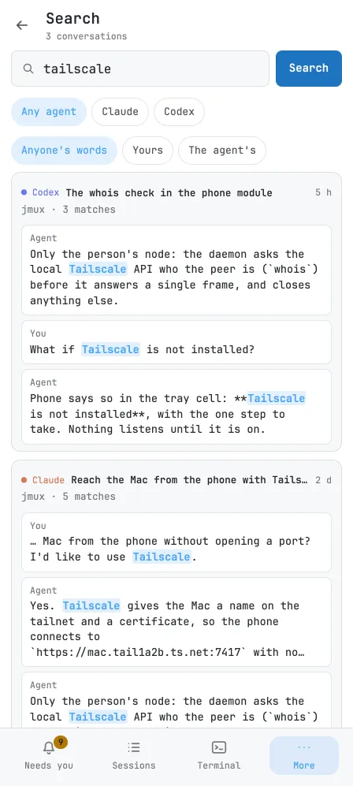
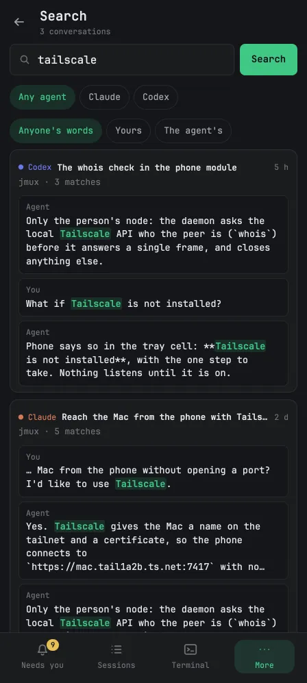
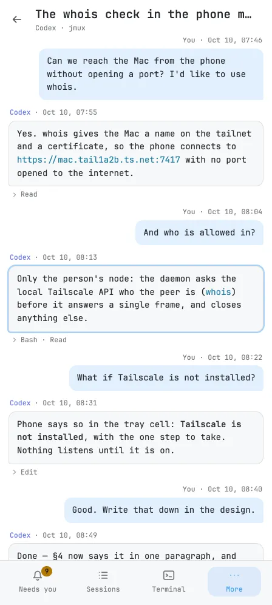
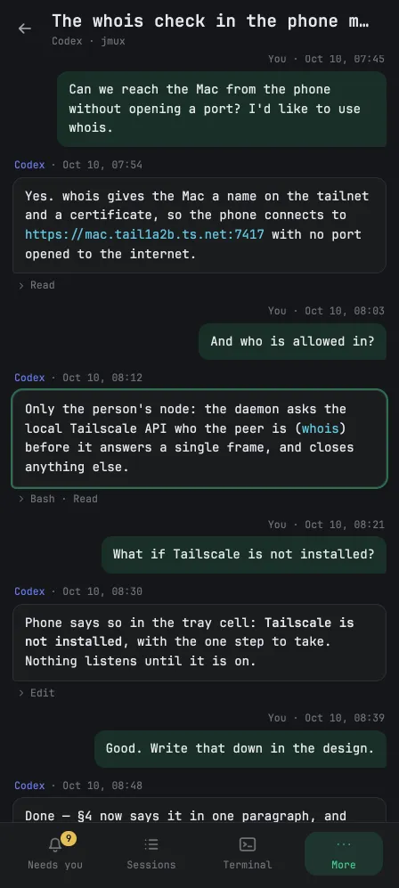
La misma búsqueda, desde el teléfono (More ▸ Search): una palabra, todas las conversaciones del Mac, de Claude y de Codex. Al abrir una, el mensaje que coincidía queda marcado.The same search, from the phone (More ▸ Search): one word, every conversation on the Mac, Claude's and Codex's. Open one and the matching message is marked.
23:50
AterrizaIt lands
Comprobado sobre el último commit de la rama, llevado a main e instalado. Con todas las sesiones abiertas.Checked on the branch's last commit, brought onto main and installed. With every session still open.
La tarjeta Landing dice qué pasa cuando un cambio llega a la rama principal: qué orden lo instala y qué comprobación tiene que pasar antes. Si le has dejado a tu líder aterrizar e instalar, lo hace solo. Si el perfil dice que te pregunte antes de aterrizar, te pregunta.
The Landing card says what happens when a change reaches the main branch: which command installs it and which check must pass first. If you left landing and installing to your lead, it does it alone. If the profile says to ask you before landing, it asks.
El líder pide el aterrizaje y jmux lo ejecuta, sin fiarse de su palabra. Se niega si la copia no está limpia o si la rama no es un avance rápido (fast-forward) de main. Pasa la comprobación entera sobre el último commit exacto de la rama, avanza main, instala y le cuenta el resultado al líder, con la ruta de su registro. Si la comprobación falla por un test inestable, al repetirla empieza por el paso que falló: los que pasaron sobre ese mismo commit se guardan.
The lead asks for the landing and jmux runs it, without taking its word for anything. It refuses if the checkout is not clean or if the branch is not a fast-forward of main. It runs the whole check on the branch's exact last commit, moves main forward, installs, and tells the lead the result, with the path to its log. If the check fails on a flaky test, running it again starts from the step that failed: the ones that passed on that same commit are kept.
12345
Después de aterrizar. 1La copia del líder ya está en main. 2Qué cambió, contado para quien no estaba. 3Lo que la revisión dejó para más tarde, apuntado por el líder en una entrada nueva, B-06, que 4el tablero marca como nueva. 5Nada queda en curso.After landing. 1The lead's checkout is on main now. 2What changed, written for whoever wasn't there. 3What the review left for later, written down by the lead as a new entry, B-06, which 4the board marks as new. 5Nothing is left in progress.
Cuando lo que se instala es el propio jmux, tampoco se cierra nada. El demonio nuevo recoge las terminales vivas, el chip de versión de la barra de título cambia de color, y cuando haces clic la ventana se reabre sobre la versión nueva. Y si esa versión se publica, tus otros Macs se ponen al día solos la próxima vez que abren jmux.
When what gets installed is jmux itself, nothing closes either. The new daemon takes the live terminals over, the version chip in the title bar changes colour, and when you click it the window reopens onto the new version. And if that version is published, your other Macs catch up on their own the next time they open jmux.
A medianoche, el tablero tiene dos entradas menos y una nueva, la que el líder apuntó para más tarde. Cierras la tapa. Mañana todo estará donde lo dejaste.
At midnight the board has two entries fewer and one new one, the thing the lead wrote down for later. You close the lid. Tomorrow everything will be where you left it.
✕
Lo que jmux no haráWhat jmux won't do
A un buen ayudante se le nota en lo que no hace. Esta es la lista, y cada punto se cumple hoy.You can tell a good assistant by what it does not do. Here is the list, and every point holds today.
Contestar por ti. Lo que pregunta una sesión tuya lo contestas tú, en la terminal, en una tarjeta o en el teléfono. Con Away, tu líder contesta a sus hijos de Claude, y nunca un push, un despliegue o lo que tus barreras te reservan.Answer for you. What one of your sessions asks, you answer, in the terminal, on a card or on the phone. With Away, your lead answers its Claude children, and never a push, a deploy, or anything your guardrails keep for you.
Ponerse entre tú y tu agente. No hay capa de chat. Cada agente corre en su propia CLI, entera, en una terminal de verdad: lo que sabes hacer en Claude Code o en Codex lo sigues haciendo igual.Stand between you and your agent. There is no chat layer. Each agent runs in its own CLI, whole, in a real terminal: what you know how to do in Claude Code or Codex, you keep doing the same way.
Llamarte desde fuera de la ventana. Ni globo en el Dock, ni notificación del sistema, ni un sonido suyo: el pitido de un programa en una terminal suena como en cualquier terminal. El teléfono solo te avisa de los tipos de cosas que tú eliges.Call you from outside the window. No Dock badge, no system notification, no sound of its own: a program's beep in a terminal sounds as in any terminal. The phone only alerts you to the kinds of things you choose.
Llevar un flujo propio. No guarda un plan ni espera veredictos. Arranca sesiones, guarda el techo de permisos, entrega los mensajes y releva. El resto lo dice el líder en voz alta.Run a workflow of its own. It keeps no plan and waits on no verdict. It starts sessions, holds the permission ceiling, delivers the messages and relays. The rest, the lead says out loud.
Renombrar nada. El nombre de una sesión es tuyo. Un /rename dentro del agente cuenta como tuyo; el título que se invente el agente, no.Rename anything. A session's name is yours. A /rename inside the agent counts as yours; a title the agent makes up does not.
Escribir en tu repositorio por su cuenta. Lo que escribe ahí lo escribe porque tú o un agente se lo habéis pedido: una regla del proyecto que guardas (.jmux/project.toml), un Once o un Allow for this project (.claude/settings.local.json, fuera de git), el backlog desde el tablero o la orden de un agente, el trabajo que deja un hijo al terminar (en su rama), un aterrizaje en main. Los worktrees de los hijos viven fuera, en ~/.jmux/worktrees.Write in your repository on its own. What it writes there, it writes because you or an agent asked: a project rule you save (.jmux/project.toml), a Once or an Allow for this project (.claude/settings.local.json, kept out of git), the backlog from the board or an agent's command, the work a child leaves when it ends (on its branch), a landing on main. Children's worktrees live outside, in ~/.jmux/worktrees.
Instalarse en tus agentes sin preguntar. Un aviso te ofrece los hooks: Install, Not Now o Don't Ask Again. Si dices que sí, añade sus entradas junto a las tuyas, y quitarlo quita exactamente las suyas.Install itself into your agents without asking. A banner offers the hooks: Install, Not Now or Don't Ask Again. Say yes and it adds its entries beside yours, and removing it removes exactly its own.
Fingir que conoce a todos los agentes. Conoce dos, Claude Code y Codex, cada uno por su nombre y por lo que sabe hacer. No una tabla genérica de veinte.Pretend it knows every agent. It knows two, Claude Code and Codex, each by name and by what it can do. Not a generic table of twenty.
CifrasNumbers
Medidas con make perf sobre la app real en un Mac con Apple Silicon, en agosto de 2026 (versiones 0.1.166 a 0.1.182). No se han vuelto a medir desde entonces; cuando se midan, cambiarán aquí.Measured with make perf on the real app on an Apple Silicon Mac, in August 2026 (versions 0.1.166 to 0.1.182). They have not been measured again since; when they are, they will change here.
1,541.54ms
añadidos de la tecla al glifo sobre un terminal desnudo (mediana; la pulsación entera más lenta de 1.200 tardó 12,6 ms).added from key to glyph over a bare terminal (median; the slowest whole keystroke of 1,200 took 12.6 ms).
0/ 20.00420,004
fotogramas tarde a 60 fps desplazando 10.000 líneas. El peor tardó 5,97 ms.frames late at 60 fps scrolling 10,000 lines. The worst took 5.97 ms.
175ms
de abrir en frío al primer fotograma.from a cold open to the first frame.
204ms
al volver a abrir la ventana, desde su primer fotograma hasta que diez paneles llenos tienen su sesión.on reopening the window, from its first frame until ten full panes have their sessions.
0,0020.002%
de CPU del demonio en reposo, con diez sesiones y ninguna ventana.daemon CPU at rest, with ten sessions and no window.
223MiB
la ventana con diez terminales y 10.000 líneas en cada una. Con un documento abierto, más: WebKit dibuja en tres procesos propios.the window with ten terminals and 10,000 lines in each. With a document open, more: WebKit draws in three processes of its own.
Apéndice AAppendix A
La línea de órdenes, para agentes y scriptsThe command line, for agents and scripts
Una persona usa la ventana. Los agentes y los scripts usan jmux, y los agentes lo aprenden solos: la skill de jmux está en su propia lista de skills, y uno metido en un sandbox llega a lo mismo por MCP. jmux <orden> --help dice el resto.
A person uses the window. Agents and scripts use jmux, and agents learn it by themselves: the jmux skill sits in their own skill list, and one held in a sandbox reaches the same through MCP. jmux <command> --help says the rest.
SesionesSessions
new
Crea una sesión: una shell, una orden, o Claude o Codex con --claude / --codex.Create a session: a shell, a command, or Claude or Codex with --claude / --codex.
ls · tree
Las sesiones, y el mapa de proyectos, divisiones y pestañas.The sessions, and the map of projects, splits and tabs.
read
Imprime la pantalla de una sesión.Print a session's screen.
send · send-keys · prompt
Escribe texto, teclas con nombre, o un prompt al programa que está delante (con pegado entre corchetes según el modo).Type text, named keys, or a prompt into the program in front (bracketed paste per the live mode).
wait
Espera a que una sesión se calle, a que su agente pare o a que salga.Wait until a session goes quiet, its agent stops, or it exits.
rename · kill · clear
Nombra, termina o limpia una sesión.Name, end or clear a session.
Agentes e hijosAgents and children
spawn
Arranca un hijo, Claude o Codex, sobre una tarea, colgado de ti y nunca con más permiso que tú. Cuando termina, te llega su mensaje final.Start a child, Claude or Codex, on a task, nested under you and never with more permission than you have. When it finishes, its final message reaches you.
self
Quién eres: tu sesión, tus padres, tus hijos y en qué está cada petición.Who you are: your session, your parents, your children and where each request stands.
tell
Manda un mensaje al agente de otra sesión, como mensaje tuyo, nunca tecleado como si fuera su usuario.Send a message to the agent in another session, as a message from you, never typed as its user.
result · conversation · diff
El texto final de un turno, una conversación entera, o lo que cambió un hijo.A turn's final text, a whole conversation, or what a child changed.
review
Pide a los revisores de tu flujo que lean un cambio sin tocarlo.Ask the reviewers your workflow names to read a change without touching it.
relay
Pasa una sesión que dirige a un sucesor, con su nota.Hand an orchestrating session over to a successor, with its note.
interrupt · answer
Detiene el turno de un hijo; contesta la pregunta de un hijo de Claude, solo con Away.Stop a child's turn; answer a Claude child's prompt, only while Away.
search
Busca en todas las conversaciones de Claude y Codex del Mac.Search every Claude and Codex conversation on the Mac.
El registro y el trabajoThe record and the work
record
El índice de .gg/, una sección por su nombre, y su comprobación.The outline of .gg/, a section by its name, and its check.
backlog
Apunta, edita, archiva o termina entradas; lee o fija Next.Capture, edit, archive or finish entries; read or set Next.
work
Ata una sesión a sus entradas, o empieza el trabajo sobre una por su perfil.Tie a session to its entries, or start work on one by its profile.
profile · workflow
Los perfiles, y el flujo propio de una sesión (un líder propone un cambio; la persona lo aplica).The profiles, and a session's own workflow (a lead proposes a change; the person applies it).
Reglas, instalación y el restoRules, install and the rest
rules · settings
Las reglas de trabajo, y los ajustes con el fichero y la línea de donde sale cada valor.The working rules, and the settings with the file and line each value comes from.
land · install
Aterriza una rama en main con su comprobación y despliega, o instala la versión de esta copia, como dejen las reglas. Nunca desde un hijo.Land a branch on main with its check and deploy, or install this checkout's build, as the rules allow. Never from a child.
awake
Si jmux mantiene el Mac despierto, y quién lo está sujetando.Whether jmux keeps the Mac awake, and who holds it.
project · layout
Los proyectos, para sincronizar Macs con un script; la disposición, como JSON.The projects, for syncing Macs from a script; the layout, as JSON.
claude · codex
Instala o quita los hooks y la skill de cada agente.Install or remove each agent's hooks and skill.
update · version
Cambia jmux.app por la última versión publicada, comprobada; dice qué versiones corren.Replace jmux.app with the latest published release, checked; say which versions run.
mcp
Las herramientas de jmux por MCP, para un agente dentro de un sandbox.jmux's tools over MCP, for an agent held in a sandbox.
Apéndice BAppendix B
Cómo tenerloHow to get it
jmux es, de momento, la herramienta de una persona: su repositorio es privado, y sus versiones también. Estos pasos son para quien tenga acceso. Necesitas macOS 14 o posterior en un Mac con Apple Silicon, Claude Code o Codex (o los dos), y gh con sesión iniciada; para el teléfono, Tailscale en el Mac y en el teléfono, con los certificados HTTPS activados en su consola.
jmux is, for now, one person's tool: its repository is private, and so are its releases. These steps are for whoever has access. You need macOS 14 or later on an Apple Silicon Mac, Claude Code or Codex (or both), and gh logged in; for the phone, Tailscale on the Mac and on the phone, with HTTPS certificates turned on in its admin console.
Entra en GitHub con gh, una vez por Mac, con el permiso repo:Log in to GitHub with gh, once per Mac, with the repo scope:
gh auth login
Descarga la última versión y ponla en Aplicaciones (ditto conserva la firma):Download the latest release and put it in Applications (ditto keeps the signature):
Abre jmux. Un aviso te ofrecerá los hooks de Claude y de Codex; sin ellos, jmux no sabe en qué está cada agente.Open jmux. A banner will offer the Claude and Codex hooks; without them, jmux cannot tell what each agent is doing.
Las versiones no están notarizadas: un zip descargado con el navegador necesita una vez xattr -dr com.apple.quarantine /Applications/jmux.app. Con gh no hace falta. Instalado así, la app arranca su demonio al abrirse; make install desde el código fuente, además, lo deja arrancando con la sesión del Mac. A partir de ahí jmux se actualiza solo al abrirse.
Releases are not notarized: a zip downloaded with a browser needs xattr -dr com.apple.quarantine /Applications/jmux.app once. With gh it does not. Installed this way, the app starts its daemon when it opens; make install from the source also has it start at login. From then on jmux updates itself when it opens.
ColofónColophon
Cómo está hecha esta páginaHow this page is made
Compuesta en Fraunces, de Undercase Type, y Newsreader, de Production Type, las dos bajo la SIL Open Font License y servidas desde aquí. Un fichero HTML, una hoja de estilo dentro de él y unas pocas líneas de JavaScript para el idioma, el tema y la hora de la cabecera; sin framework y sin nada que compilar, y tampoco hay rastreadores. Las capturas son WebP y cada una reserva su sitio antes de cargar.
Set in Fraunces, by Undercase Type, and Newsreader, by Production Type, both under the SIL Open Font License and served from here. One HTML file, a stylesheet inside it and a few lines of JavaScript for the language, the theme and the time in the running head; no framework and nothing to build, and no trackers either. The captures are WebP and each holds its place before it loads.
 1234567
1234567